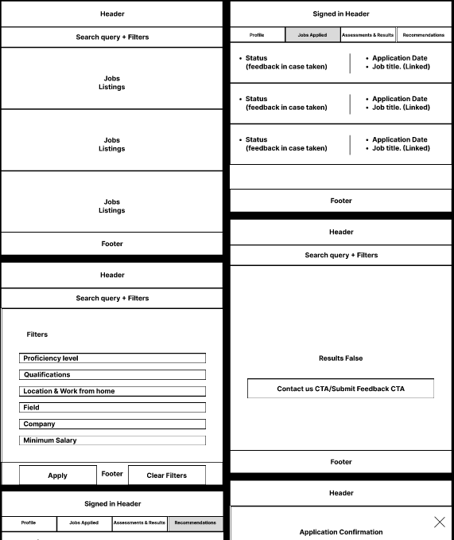
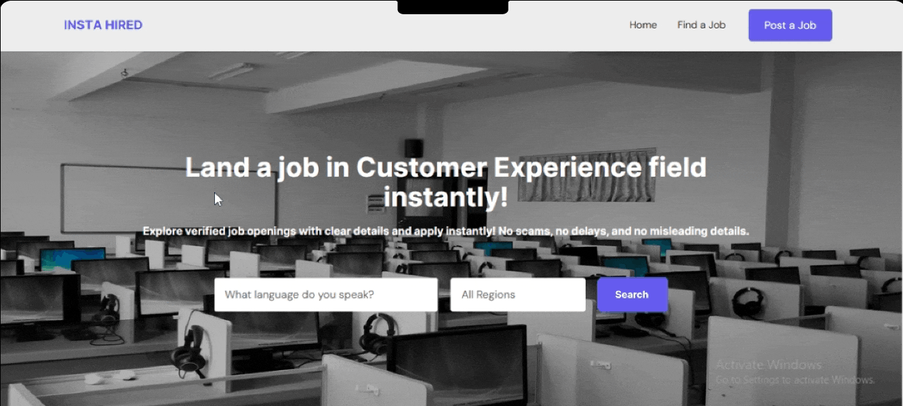
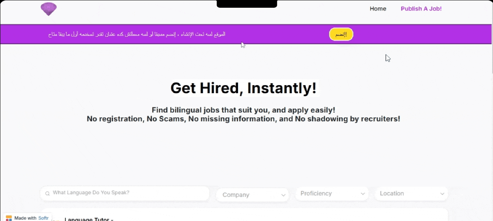
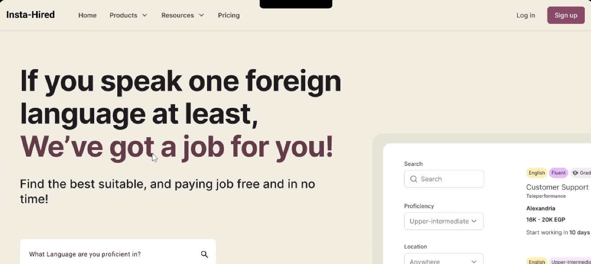

Co-founder & Product Discovery · Sep–Dec 2024
I graduated bilingual. English was the one skill I felt confident getting paid for.
Landing the right job proved to be harder than graduation itself.
Jobs scattered in Facebook posts and groups. Outright scams. Recruiters who never return your messages.
An exhausting cycle that ended — when it ended at all — more by luck than by design.
The obvious solution
Build a job board. Filter by language. Match bilinguals to jobs.
However, it sounds so obvious that anyone who's lived this problem would build it.
I nearly did. Then I realized something uncomfortable:
My idea was full of bias.
The trap of personal frustration
I was solving from my own pain — a job seeker's pain. But a job board is a two-sided marketplace.
The job market has more players than talent.
The resources
$50. No coding skills. Four months.
So before building anything
I forced the idea through four rounds of de-risking — from personas to wireframes my co-founder could validate early.
Evidence before conviction.
Spec wireframes describe a solution — too finished to challenge. So I chose descriptive ones.
Show function, not form. Easier to break early.
Descriptive wireframes map what a screen does, not how it looks.
A peek at the wireframes

At some point, research has to meet reality.
So I shipped. Three times — for less than $50.
V1.0 · Do people care?
WordPress.
Live in days. No code. Cheapest possible way to find out if anyone would sign up.
A peek at V1.0

V1.1 · Can we iterate on it?
Softr, no-code.
Signs of life — but too rigid to move on. So we rebuilt on something we could reshape weekly.
A peek at V1.1

V1.2 · Would it hold up in the market?
Figma prototype.
Not "do people like it?" — but "would this survive real competition?"
A peek at V1.2

V1 asked: do job seekers need this enough to actually use it?
Nearly every user came through someone else's recommendation. When we needed research participants, they brought their friends.
The numbers said yes. But they also said something I hadn't expected.
The data forced two pivots.
Pivot one
Every job board asks users to sign up first. Ours shouldn't have.
Search and apply without registering. Accounts could wait.
Pivot two
I'd cast recruiters as the enemy. They were the shortcut.
They already had the networks I'd need months to build — partnering saved us runway.
What started as "a job board for bilinguals" became something different:
A validated product strategy, a clear business model, and a proven market — for $50.
Who did what
Every strategic call — from research to both pivots — was mine.
Every line of code across all three MVPs — my co-founder, Osama Ali.
The full 26-slide presentation tells the detailed story.
See the original deck below ↓
Original presentation
Paste your Figma "Embed" link into the iframe src above.